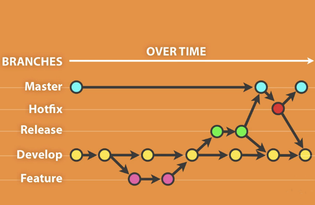
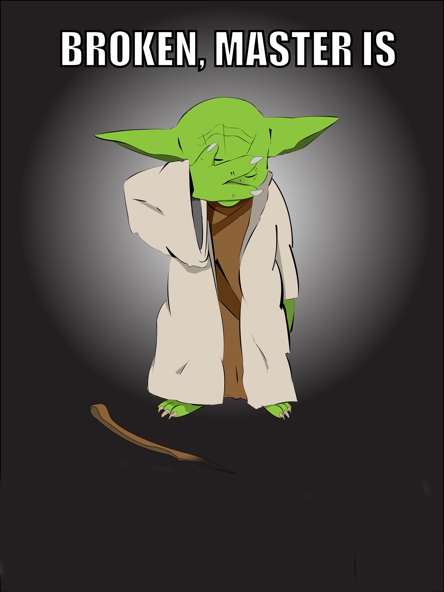
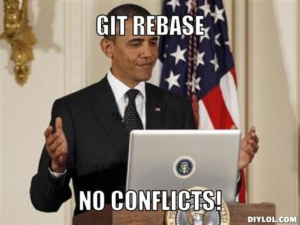

Was ist git?
- Ein Versionsverwaltungssystem
- Ein Protokoll
- Ein abstraktes Filesystem
- Linus: A distributed stupid content tracker
Was ist es nicht?
- CVS (WWCVSND)
- SVN (CVS done right.)
Erklärung:
Linus on GoogleTalk.
Zentraler Workflow
- Zentraler Workflow wie bei CVS
- Viele Entwickler arbeiten mit einem Repository
- Jeder Entwickler hat nur eine unvollständige Kopie
Dezentraler Workflow
- git typischer Ablauf.
- Jeder Entwickler hat ein Repository
- Jeder Entwickler hat eine volle Kopie
git init
- Lege ein neues Git-Repository in your-repo an.
$ mkdir your-repo && cd your-repo
$ git init .
$ ls --all
. .. .git
$ tree .git
.git
├── branches
├── config
├── HEAD
├── index
├── [...]
├── logs
│ ├── HEAD
│ └── refs
├── objects
└── refs
git add
$ git add [your-file-or-dir-here]
Alle Bereiche interaktiv als HTML:
git commit
$ echo "Hello Phil!" > README
$ git add README
$ git status
# On branch master
# Changes to be committed:
# new file: README
$ git commit --all --message "commit message" # ausgechrieben
$ git commit -am "commit message" # oder kürzer
$ git commit -a # lange messages
[Editor öffnet sich]
$ git status
# On branch master
nothing to commit, working directory clean
Was ist ein diff?
Ein diff ist die Änderung zwischen zwei Änderungen.
Errr… Wat?
# Zeige alle Änderungen seit dem letzten Commit $ git diff diff --git a/TODO.list b/TODO.list index e6c2b18..a2fe0bc 100644 --- a/TODO.list +++ b/TODO.list @@ -1,21 +1,20 @@ +✓ Hinweise in der Versionshistorie verstecken -✓ Zettelchen schreiben
# Bestimmten Commit zeigen $ git show a2fe0bc <dasselbe wie oben>
Freunde von git commit
Früher oder später will man etwas berichtigen
# Letzte Commit-Messages berichtigen
# to amend == berichtigen.
$ git commit --amend
# Änderungen an einem file zurücksetzen
# Working Tree -> Unmodified
$ git checkout -- your_file.txt
# "git add" rückgängig machen
# Index -> Working Tree
$ git reset your_file.txt
$ git stash # Änderungen kurz wegsichern
$ git stash pop # … später wieder hervorholen
Die Objektdatenbank #1
Vier unterschiedliche Objekttypen:
- Blobs (Dateien)
- Trees (Verzeichnisse)
- Commits (Änderungen)
- Referenzen (Branches oder Tags)

Die Objektdatenbank #2

Die Objektdatenbank #3

Git Branching
Branches #1
Branches erstellt man mit:
$ git checkout -b <branch-name>
In bestehende branches wechseln:
$ git checkout <branch-name>
Branches auflisten:
$ git branch --all
Branches #2
Branches führt man zusammen mit:
$ git merge <target-branch>
Dabei können böse Dinge passieren.
Dinge die git-Anfänger zu CVS-Usern werden lässt.
Es können Merge-Conflicts entstehen.
Was passiert wenn in beiden branches dasselbe File geändert wurde?
- Andere Zeile? git merged es automatisch.
- Selbe Zeile? Uh-oh.
git clone
- Klone ein Repository
$ git clone git://github.com/studentkittens/git-und-die-wolke.git
Cloning into 'git-und-die-wolke'...
remote: Counting objects: 94, done.
remote: Compressing objects: 100% (72/72), done.
remote: Total 94 (delta 36), reused 72 (delta 16)
Receiving objects: 100% (94/94), 5.70 MiB | 1.60 MiB/s, done.
Resolving deltas: 100% (36/36), done.
URL-Schema Beispiele:
git://github.com/qitta/foozel.git → Git [Read only] git@github.com:sahib/rmlint.git → SSH [Preferred] https://github.com/tmarc/advanced-ios.git → HTTPS [Notlösung] git clone file:///opt/git/project.git → Lokal
git remote
Entfernte Repositories verwalten:
# Alle remotes auflisten
$ git remote -v
origin git@github.com:studentkittens/git-und-die-wolke.git (fetch)
origin git@github.com:studentkittens/git-und-die-wolke.git (push)
# Neues remote adden
$ git remote add nullcat git@nullcat.de
$ git remote -v
…
nullcat git@nullcat.de (fetch)
nullcat git@nullcat.de (push)
# Bestehendes remote verändern
$ git remote set-url nullcat https://git.nullcat.de
git push
$ git push [<remote> [<local-branch>]]
$ git push
$ git push origin
$ git push origin master
git pull
Das logische Äquivalent zu git push.
Zieht Änderungen von einem remote.
$ git pull <remote> <remote-branch>Auch hier können Merge-Conflicts entstehen.
Vor einem git push sollte man immer ein git pull machen.
Hilfe?!
Das ist ja alles schön und gut…
…aber ich versteh kein Wort.
Hier wirst du geholfen:
manpages:
$ git help <commando> $ git help tutorial
Es gibt eine Menge Bücher.
git bisect #1
Source:
bool is_odd(int number) {
return !number % 2; /* Wrong! */
}
int main(int argc, char *argv[]) {
printf("Odd numbers of arguments? %d!\n",
is_odd(argc - 1) ? "Yes" : "No");
}
Test case:
void test_is_odd(void) {
for(int i = -20; i < 20; ++i) {
assert((is_odd(i) != 0) == (i % 2 != 0));
}
}
git bisect #2
Find by binary search the change that introduced a bug
Aufgabe:
- Finde heraus wann ein Fehler eingeführt wurde.
- Schaue dir an was damals geändert wurde.
- Leite daraus ab was der Fehler ist.
Funktionsweise:
- Festlegen eines good/bad commits
- Auschecken der Mitte, Testen, Links oder Rechts weitersuchen.
git bisect #3
$ git bisect start HEAD HEAD^^^
$ git bisect run make test
# ... viel output von $(make test) ...
5145c8 is the first bad commit
'bisect run' erfolgreich ausgeführt
$ git bisect reset # Kehre zur normalen Arbeit zurück
$ git show 5145c8 # Zeige unterschiede im bad commit
commit 5145c8781e30057c8e2058d1c361363e213a17f4
Date: Fri May 3 15:47:38 2013 +0200
Made is_odd() better looking
diff --git a/is_odd.c b/is_odd.c
bool is_odd(int number)
{
- return number % 2 == 1;
+ return !number % 2;
}
git bisect #4
Was lernt man draus?
Immer kleine Commits machen!
Nehmt euch Zeit für eine sinnvolle Commit-Messages! Schlechte Beispiele (*):
- Some changes - Riesiger diff.
- minor changes - Complete Rewrite.
- Merge. - Manuelles Merging.
git bisect ist ein gutes Argument für Unit-Tests.
* (Noch mehr davon: http://whatthecommit.com/)
Suchen und Beschuldigen
Suche background: in allen .css Dateien.
$ git grep -n 'background:' -- '*.css'
src/custom.css:56: background: -webkit-radial-gradient(#9cf, #369);
src/custom.css:57: background: -moz-radial-gradient(#9cf, #369);
src/custom.css:58: background: radial-gradient(#9cf, #369);
Herausfinden wer wann etwas geändert hat:
$ git blame -L 56,58 src/custom.css
# SHA1 (Autor LN) Content
77a79bbc (Elch 56) background: -webkit-radial-gradient(#9cf, #369);
64ac73cb (Katze 57) background: -moz-radial-gradient(#9cf, #369);
77a79bbc (Elch 58) background: radial-gradient(#9cf, #369);
→ Der Autor Katze ist für den Mozilla-Support zuständig.
git tag
Manchmal muss man einen Commit taggen.
Wie branches, nur fest.
Beispielsweise mit einer Version: 1.2 beta
# Neuen Tag anlegen git tag "1.2 beta"
# Alle Tags auflisten git tag# Anderes Tag löschen. git tag -d "1.2 beta"
# Tags "veröffentlichen" git push origin <local-tag-name>
Das GitFlow Branching Modell

---
---

Tooling
Plugins
- GVim Fugitive Plugin
- Eclipse EGit
- Netbeans (bereits integriert)
Standalone Tools
- gitg (Linux / Gnome)
- giggle (Portabel / Gnome)
- tig (Linux / ncurses)
- gitk (bereits in git enthalten)
- GitHub Windows Client
Best Practices #1
.gitignore nutzen (und git clean!).
- Keinen auto generierten Code/Projektdateien committen.
- Wenn nicht vermeidbar dann in eigenen Commit.
- Für Dokumentation am besten eigenen Branch nutzen!
Sinnvolle Commit-Messages.
- Siehe Folie für git bisect 4.
Best Practices #2
Ein Feature == Ein Commit.
- Macht Debugging/Übersicht einfacher.
Review Code before commit.
- Keine Fixed up previous commit Messages.
Branches für Features nutzen.
- Damit der master branch benutzbar bleibt.
……
git fetch
git pull ist ein git fetch && git merge.
Warum sollte man das wollen?
Wenn man nicht will dass automatisch gemerged wird.
Beispiel:
$ git fetch origin $ git checkout origin/master $ # look around $ # if satisfied: $ git checkout master $ git merge origin/master
git rebase #1
Ausgangszustand:

git rebase #2
Ohne Rebase, mit git merge:
$ git checkout master
$ git merge experiment

git rebase #3
Mit Rebase:
$ git checkout experiment # In 'experiment' wechseln
$ git rebase master # Basis auf master verschieben
$ git checkout master # In 'master' wechseln
$ git merge experiment # Fast-Forward Merge zu 'experiment'
---
---

Ein Exkurs zu Storage as a Service mit git
SaaS mit git-annex: Git Annex: Dropbox fuer Harte